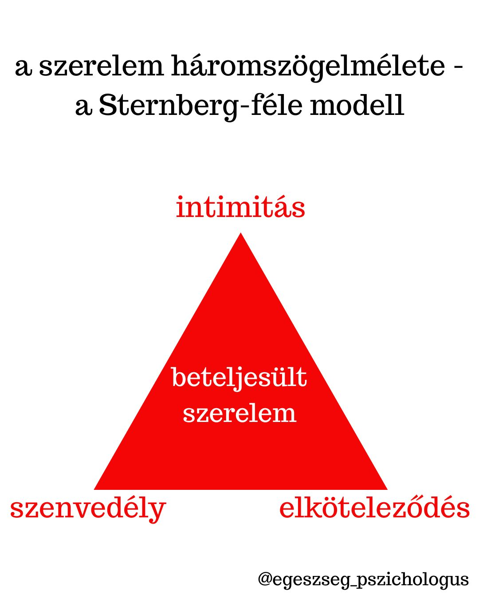
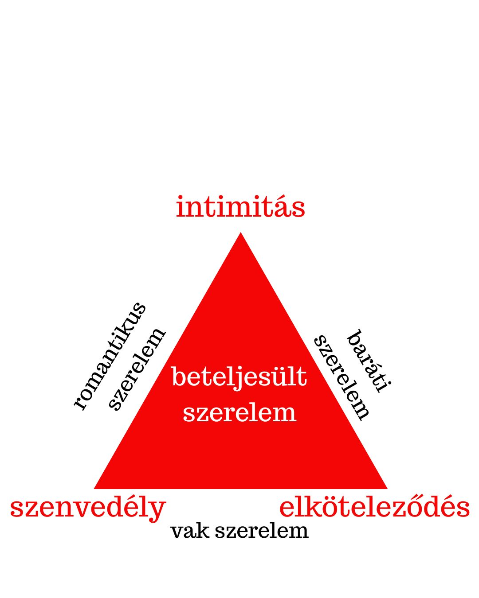
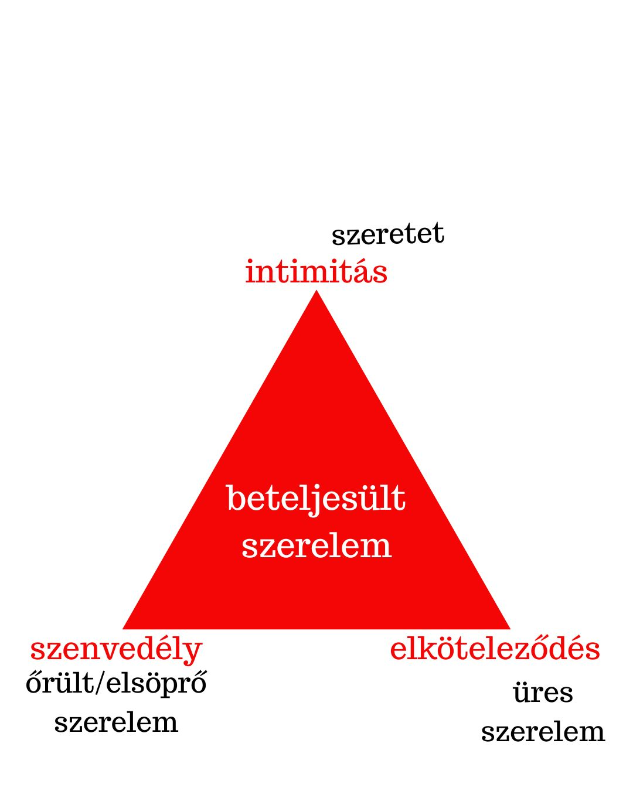

A szerelemről tudományos megközelítésben – A szerelem háromszög modellje



A szerelem egy sajátos és univerzális érzés, amely számos művészt, zenészt, írót, költőt megihletett. A pszichológiának sem kerülte el a figyelmét, számos törekvés irányult a szerelem tudományos leírására.
Az egyik legátfogóbb, a szerelmet magyarázó elmélet a Sternberg-féle háromszögelmélet (1986). Sternberg modellje szerint a szerelem 3 összetevőből áll (egy képzeletbeli háromszöget alkotva): intimitás, szenvedély, elköteleződés.
Az intimitás a háromszögmodellben az érzelmi közelséget jelöli, énünk megmutatását, a kapcsolódásról, a kötődésről szól – ez a szerelem érzelmi oldala, érzelmi töltete.
A szenvedély a testi vonzalomról, a szexualitásról szól – ez a szerelem testi oldala.
Az elköteleződés a döntést a partner mellett és a tartós párkapcsolatra való törekvést jelöli – ez a szerelem értelmi oldala, a kognitív faktor az elméletben.
Sternberg szerint akkor beszélhetünk beteljesült szerelemről, ha mindhárom fenti komponens jelen van a kapcsolatban.
Aszerint, hogy 1 vagy 2 összetevő hiányzik, még további 6 különböző kapcsolattípusról beszélhetünk.
1) Romantikus szerelem: az intimitás és a szenvedély magas szintje jellemzi, azonban az elköteleződés hiányzik.
2) Baráti / társas szerelem: elköteleződés és intimitás van a felek között, szenvedély nélkül (baráti jellegű kapcsolat vagy már hosszú ideje tartó házasság, ahol a szenvedélyek lecsillapodtak).
3) Vak szerelem: a szenvedély szintje magas, ám a felek még azelőtt döntenek az elköteleződés mellett, hogy valódi intimitás kialakulna (előfordul, hogy intimitásra csak az egyik fél vágyna).
4) Szeretet: itt az intimitás erőteljesen jelen van (elfogadás és barátságosság jellemzi a kapcsolatot), szenvedély és elköteleződés nélkül.
5) Üres szerelem: elköteleződtek ugyan egymás mellett a felek, de érzelmi közelségnek, azaz intimitásnak vagy szenvedélynek nyoma sincs.
6) Őrült / elsöprő szerelem: a szenvedély, a testiség tartja össze lényegében a feleket, hiányzik az érzelmi közelség és az elköteleződés.
Bár a fenti modell alapján a beteljesült szerelem (a magas szintű intimitás, a tartós elkötelezettség és az erőteljes szenvedély együttes kombinációja) az ideális állapot, úgymond a szerelmi kapcsolatok csúcsa, hozzá kell tenni, hogy ez ritka, illetve tudatosság, tudatos erőfeszítés nélkül nem marad fenn hosszútávon.
Szerző: Tatai Csilla